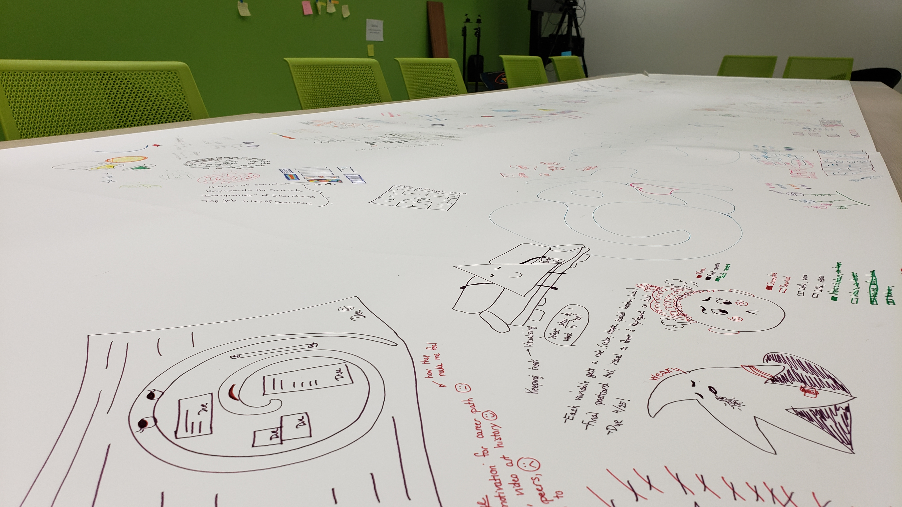
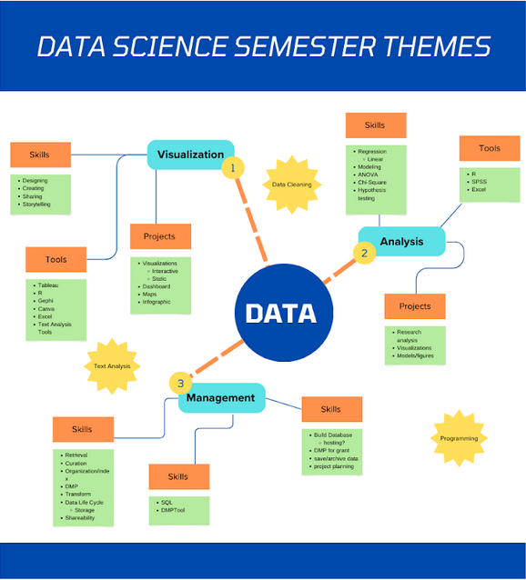

Projects
A selection of recent and representative work.

Dear Data Binghamton
Creative analog data literacy project resulting in a blend of art, data, and self-reflection.

Thematic Tri-Semester Data Science Curriculum
Integrated data science curriculum designed to scaffold data literacy across three semesters.
CRAAP Attack: An Information Literacy Video Game
Interactive, browser-based activity for teaching Information Literacy concepts.